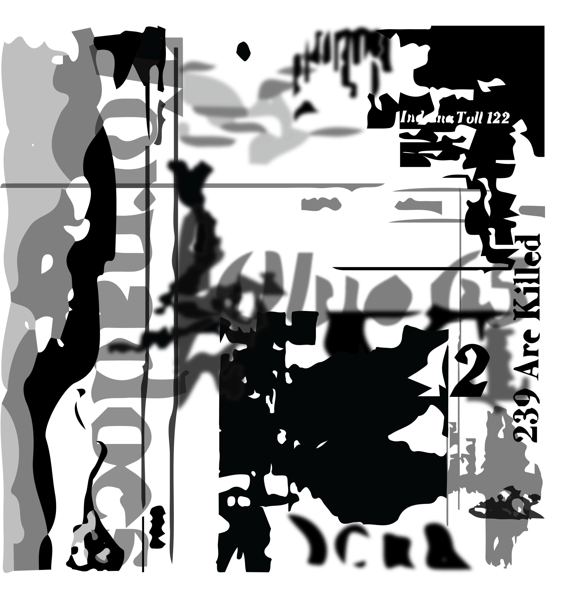

ART 226 — Graphic Design I, Fall semester 2022, Adobe Illustrator, Adobe Photoshop, 10x10 inches.
For this project, we had been assigned to use a news article and instructed to create an abstract artwork from it. This was a timed exercise in the class. While creating this piece I used multiple different distortion methods, as well as effects to give this piece more depth. I wanted to include all parts of the article, mainly the image because I felt that the tornado was a good organic shape to work with. I also used the information and titles from the article, I felt it was a good way to make the piece more dynamic, especially with certain distortions providing vertical and horizontal lines that I incorporated into the design.
